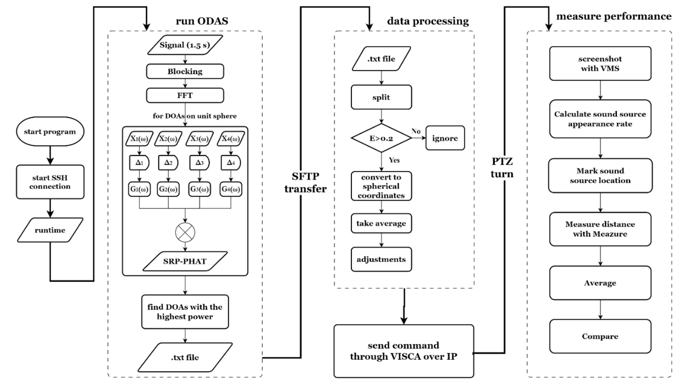

Automatic Tracking and Recording Using Sound Source Localization for Live Drama Performances
林采穎、蔡予曦
Abstract
Most drama performance recordings are recorded from a fixed point and angle, making it hard to find the actors who are speaking. This research proposes an automatic tracking camera system that integrates both hardware and software, while replacing the mainstream method for automatic people-tracking of computer vision with sound source localization.
Methodology
Conclusions and Future Work
We have successfully implemented a camera system that can automatically track sound sources and measured its performance. We hope to further improve its accuracy by implementing a Kalman Filter.